If you are always using the page UI during end-to-end tests, your tests might be slower than needed. If such test fails, it might not tell you much about the root cause of the error. In this blog post, I will show a particular example of how to improve such tests using our Mercari US online marketplace tests as an example.
🎁 This blog post uses an example application from the repo bahmutov/fastify-example and tests to write in bahmutov/fastify-example-tests, see the "bonus33.js" spec file. These exercises and their solutions constitute the "Bonus 33" lesson in my Cypress Network Testing Exercises advanced course. Purchase the full course if you are interested in improving your understanding of advanced Cypress testing topics.
The application
Imagine a typical situation (at least for us at Mercari US):
- the user enters a new item via the web form
- the new item is added to the internal database. It might take a few seconds to prepare the item's page
- the new item's page is then scraped by the 3rd party search service. It might take up to a minute for the search results to include the new item.
Here are the screenshots showing the stages of the user journey.
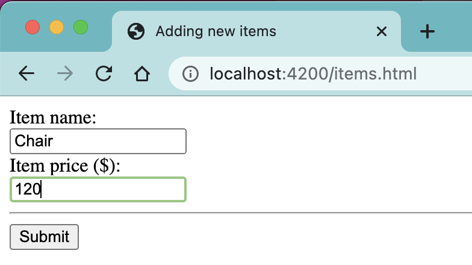
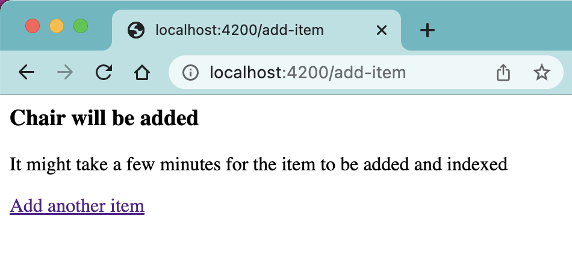
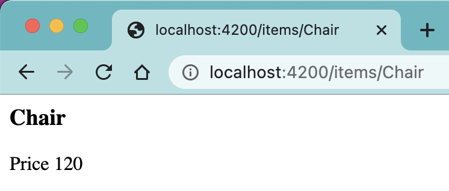
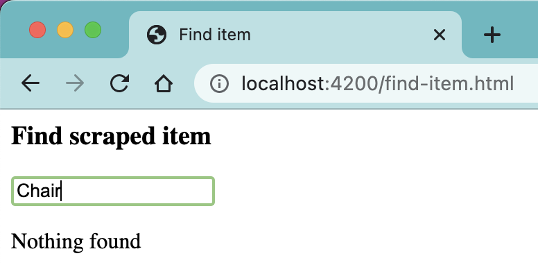
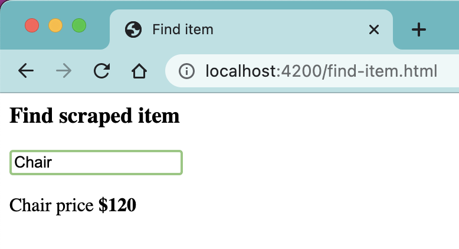
Here is diagram of what happens to the item as it is added
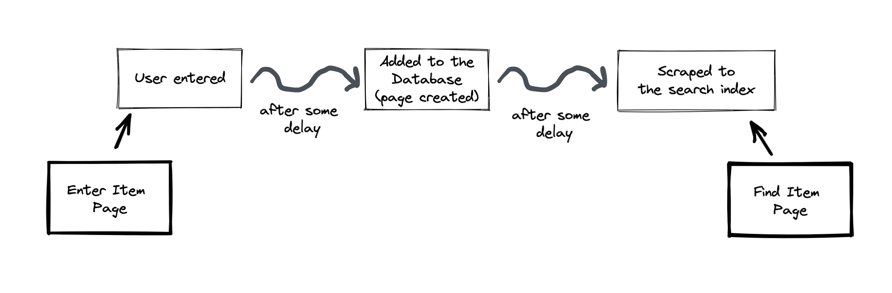
How would you write the search test to confirm that the new items are scraped correctly? Would you add the item, wait several minutes, and then use the search page? The static wait would have to be long enough to guarantee that even if the 3rd party services are at their slowest rate, by the time you search, the item has been scraped already. Alternatively, let's add the item, and then retry the search. If the item is not found, not big deal - we will wait N seconds, then try again. But what if the search returns nothing? Where is the problem? Was the item NOT added to our database? Was the item NOT scraped? A good test points at the root cause when it fails. Thus we will solve the same problem one more time by "tracing" the item's progress via cy.request calls.
beforeEach hook
Each test enters a new item using the following beforeEach hook
1 | beforeEach(function enterItem() { |
Let's see how we can write the test itself to confirm the number is scraped and can be found by the user.
Solution 1: static wait
Let's use only the user interface to test how the new item can be added.
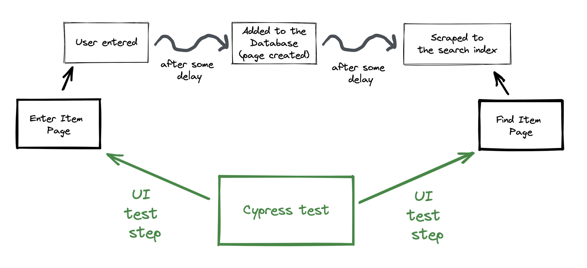
If it can take up to one minute for the item to be added to the database, and up to another minute for the search service to scrape it, then we can simply wait 2 minutes.
1 | it('adds a new item and then finds it (static wait)', function () { |
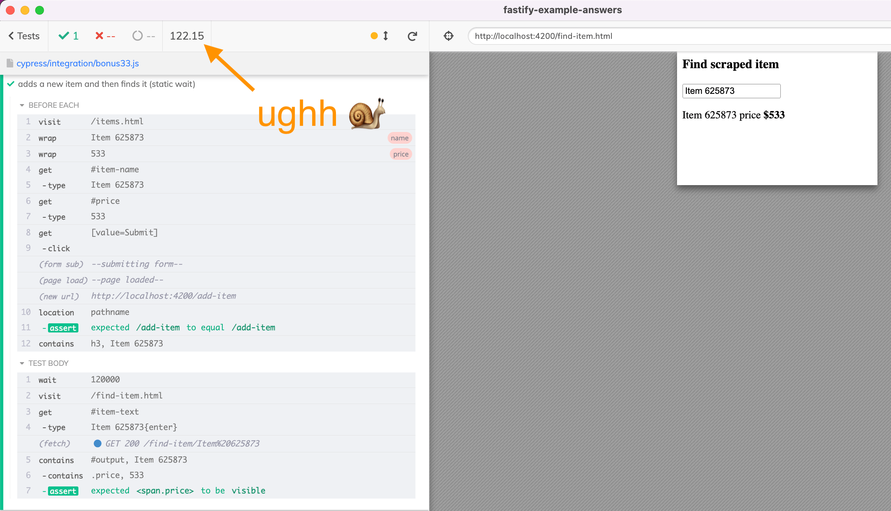
In the fastify-example server logs I can see the following messages while the test is running
1 | adding item request { name: 'Item 625873', price: 533 } |
On average, adding the new item to the database takes 30 seconds, and scraping it takes on average 30 seconds. One minute is the worst case scenario, thus our test spent unnecessarily waiting an entire minute...
Solution 2: retry the search
Let's add the item and immediately go to the search page. We can try finding the item, and if it is not yet ready, we can try again after some delay. I will use the cypress-recurse plugin to retry Cypress commands until a condition becomes true.
1 | it.only('adds a new item and then finds it (retries the search)', function () { |
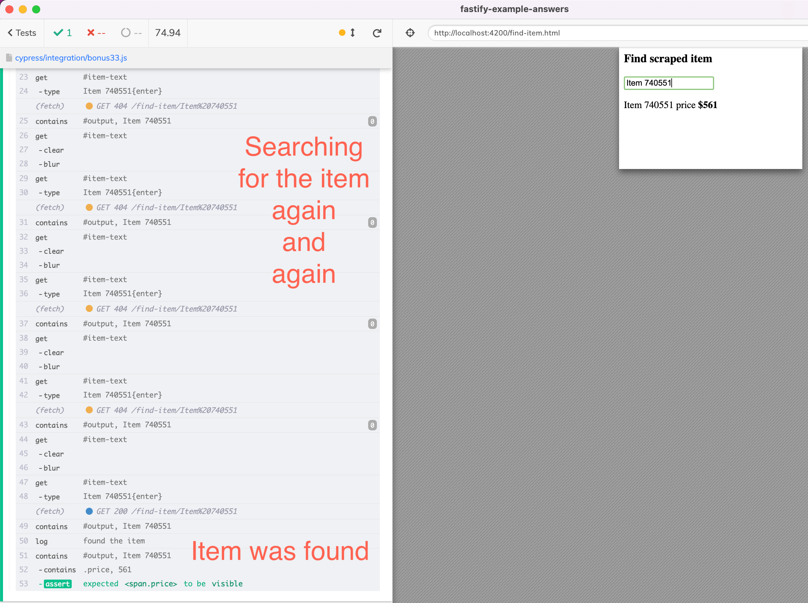
The server logs for this test show the following numbers:
1 | adding item request { name: 'Item 740551', price: 561 } |
The item was ready to be found after 70 seconds, and the test took 75 seconds, not bad!
Solution 3: pinging APIs to trace the item's progress
The previous test is ok, yet it has a flaw. If the test fails, we have no idea why the item has not been found. Was it NOT added to our internal database? Was it NOT scraped correctly?
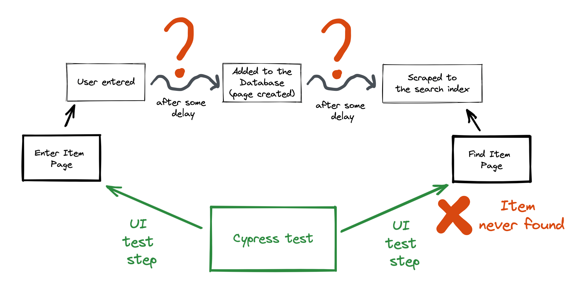
Instead of retrying the search through the user interface, let's us poll the APIs to trace the item added to the database, and then ping the search API to check when the item has been scraped. Once we know the item has been scraped successfully, we can go to the search page and find it.
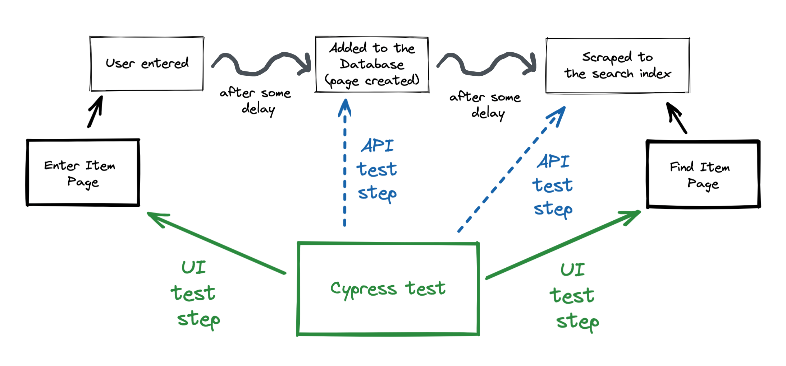
1 | it('adds a new item and then finds it (retries the API calls)', function () { |
This solution confirms the item is added to our internal application database by pinging the item's page (or some other API endpoint). Then it pings the search service to check when the item has been scraped. Only after we know the search service returns it, we visit the page and use the UI to confirm the search feature is working.
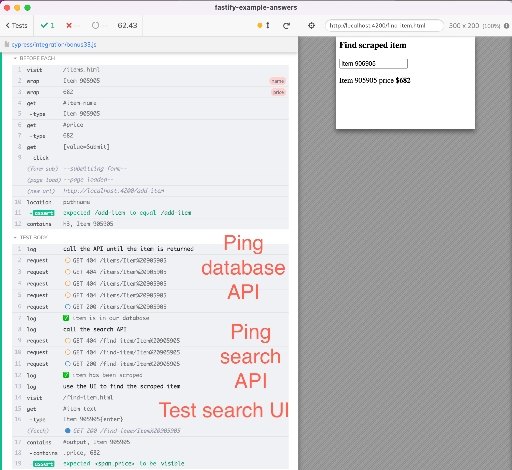
The server logs show that this aligns with our operations
1 | adding item request { name: 'Item 905905', price: 682 } |
If the test had failed, we would know precisely which of the 3 parts was not working: the item addition, the search scraping, or the search UI.
If we run all three tests together using cypress run, we can see that test timing improvements.
1 | ✓ adds a new item and then finds it (static wait) (122050ms) |
The 3rd test faster than the 2nd in this particular run, but on average, it should take almost the same time. The 3rd solution has a big advantage other the other two solutions: if the test fails, it would immediately point at the culprit service.